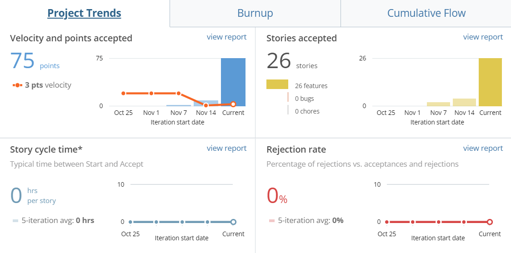

Foodscription
College students often have extremely busy schedules, disallowing time to cook food or even have enough time to physically order and wait for the delivery to arrive.
The main purpose of this product is to create a subscription service of foods that a user eats regularly. For example, if a user frequently drinks coffee and eats a bagel in the morning, they can set up a subscription to get a coffee and bagel delivered every morning. This way, students can eliminate the time ordering food and be able to customize their meals rather than having to take time to cook food or waste time having to physically order every time they want to eat.
Expected Outcomes
Outcome #1
Through this product, students will be able to save time by not having to physically order food items that they eat regularly. Instead, they will be able to create a subscription plan so that their food can be delivered right to their door or be ready for pickup, without having to worry about remembering to order.
Outcome #2
Secondary personas such as restaurants/cafes will have more revenue because students will be ordering more frequently, creating more business.
Personas
To better empathize with my users, I have created two user profiles. Kaitlyn is a primary persona and Sam is a secondary persona.
Key Actions
Action #1
User Onboarding
Users can log in to the app by entering their email address and password. For first time users, users can create a new account by entering their full name, email address, password, and phone number. There is a forgot my password option where users can recover their password by entering their email address or phone number. A message is then sent to their method of choice with steps on how to reset their password.
Home page
Action #2
Home Page - General
The home page features three key elements: subscriptions that are upcoming, subscriptions that are currently active, and recommended subscriptions based on the user’s current ones.
Action #3
Home Page - Upcoming Subscriptions
When the user clicks on the upcoming subscriptions, it displays a new frame showing a schedule of active subscriptions. The schedule is divided into the days that subscriptions will arrive. For each day, it shows what meal category subscriptions belong to (breakfast, lunch, etc.), and for the subscriptions themselves, what company it’s from, the item they are getting, and the time it will be delivered approximately.
Action #4
Home Page - My Subscriptions
For the page showing subscriptions that are currently active, it shows all of the user’s subscriptions and how many deliveries are left for each one. The user can also click on individual subscriptions to see specific details about it. It shows key details such as the item they are receiving, start and end date, how often it repeats (weekly, monthly, etc.), the time it arrives, delivery instructions, and an option to cancel the subscription.
Subscription
Action #5
Creating a Subscription
The user can pick any item from select businesses and create a specific subscription plan. When creating a subscription plan, the user picks the start and end date, how often it repeats (weekly, monthly, etc.), what time it arrives or is ready for pickup, and if it should be delivered or picked up.
Settings
Action #6
Settings - Personal Information
The user can change their name, email address, phone number, and password.
Action #7
Settings - Payment Methods
This page displays the user’s saved payment methods and the user can add new methods. New payment methods include credit/debit, Venmo, Paypal, and Apple Pay. The user is also able to delete saved payment methods.
Action #8
Settings - Delivery Address
This page displays the user’s currently saved delivery address and the user can add new ones by searching in the search bar. The user is also able to modify current addresses or delete addresses.
Action #9
Settings - Privacy Settings
This page displays location access settings and why the app needs location access information. The three options the user can pick are location access is always on, only while using the app, or location access is never allowed.
Action #10
Settings - Notifications
The user can toggle if they want delivery notifications, either through SMS or push notifications, and if they want pickup notifications.
Action #11
Settings - Log Out
The user can log out of the app which takes them back to the log-in screen.
Planning
Before starting any work on the project, I created a general schedule on Pivotal Tracker of when certain features should be released. I organized bigger features by epics, and categorized smaller features in stories. Throughout the project, I updated the schedule and through burn-down charts, I was able to see if my project was on schedule or not.
Current Iteration
This is an overall schedule of features that are to be released. Features are categorized by label.
Project overview
This displays the main data surrounding my tracker. This allows me to see useful trends in my project.
Velocity: charts the number of points accepted in each iteration, the running velocity, and the volatility of the project.
Cycle Time: demonstrates the time spent on stories by state, story type, or points, and shows all the stories in a given iteration.
Rejection rate: shows the rate at which stories were rejected and the amount of time before they were restarted.
Story Composition: shows the distribution of accepted and created stories of each type over time.
Architecture & the user flow
After I decided on the main screens, I created a flowchart to organize my different features.

Wireframing & Low-fidelity Prototypes
After creating a flowchart, I created low-fidelity prototypes so that I could map out the general structure before making the final prototype. This way, I could make adjustments to any features without it being too costly.
Rationale
Many existing food delivery apps, such as DoorDash and Uber Eats, require the user to go to the app and purchase a food item for delivery every time they want food. However, if the user doesn't have enough time, they can't afford going through the delivery process every time. Therefore, I created a way so that a user can still get food delivered, without having to go through the delivery process every time. If the user has a subscription plan set up, they can automatically have food delivered without having to physically order every time.
When creating this product, there were several direct and indirect competitor products that I researched. Two competitors that I researched were Swiggy and DoorDash. For Swiggy, the primary persona are the food deliverers, where the app's main focus is increasing the tipping for delivery drivers. Whereas for DoorDash, the app's main focus is to provide a way for users to order food from a wide selection of restaurants and have them be delivered to their door. While these are certainly solutions to real issues, they are not solutions to this specific problem statement.
The following are reasons behind my design choices such as why I used certain visual elements, the overall structure of my prototype, and influences from other existing products.
Visual
Reason #1
Visual - Minimalism
While creating this product, I tried to make the design as minimalistic as possible. When there is too much information on one frame at once, it can be very overwhelming for the user, discouraging the use of the product. Therefore, I kept the frames consistent by having white as the main background color and only using one accent color.
I used navy blue as the accent color because it signifies professionalism to the user. If I had used a brighter color, it would have conveyed a different meaning, and I wanted my product to display business.
Reason #2
Visual - Consistency
Throughout this product, I tried to keep designs and functions as consistent as possible. For example, I made sure to include a "save" button wherever a user could change information, so that the user knows that their changes are being saved. I made sure to include a back arrow for every screen that was not a main screen, so that the user can go back to the previous screen. I made sure that for every main screen, there is a bar at the bottom where the user can switch between different flows.
By keeping the design consistent, the user isn't confused by the functionality of an action. The user isn't forced to memorize different functions because functions are the same for each screen.
Reason #3
Visual - Match with the Real World
Whenever I used icons, I made sure that the functionality of the icon matches what it would do in the real world. For example, an icon of a home matches with returning to the home screen. Whenever the function of an icon wasn't clear, such as an icon for a subscription, I made sure to match the word to the icon.
By doing this, functions of icons are intuitive for the user, and the user does not have to guess what an icon does.
Structure
Reason #4
Structure - Continuity
To avoid confusing the user, I made sure that features with the same function or related functions stay within the same page. An example of this includes using popup or a dropdown menu instead of creating a new screen so that the user knows that they are within the same flow.
Interactive Prototype
As the final step of my project, I created the interactive prototype on Figma. The main features are split into different flows so that it is easier to switch between different functions.
User Feedback
The following is feedback that I recieved on the final product.
Feedback #1
While this product solves the problem of students not having enough time to go out and physically order food, it poses another problem that it creates a consistent source of economical deficit for students. Like all subscriptions, it takes a portion of the student's money every month, week, or even day, and for some, this is not feasible.
Conclusion
While working on this project, I underestimated how much time each frame would take. Additionally, I underestimated the scope of this project. There were many intermediate frames/steps that I did not anticipate. Due to this, I spent a lot of time before the project was due, filling in gaps between flows. While I started this project relatively early, I still spent a lot of crunch time right before the project was due.
If I could do this project differently, I would have narrowed down the aspects of this project. While the problem statement and project scope are relatively narrow, I added too many features such as many things to change in the settings, different aspects of the subscription, etc. However, it difficult to say what to narrow down, as I think many of the features I added are essential. Therefore, if I could do this project differently, I would have spent more time creating a flow chart and low-fidelity prototypes.
Next Steps
Step #1
Re-evaluate
I will further develop user personas and conduct more research on the needs of college students. Because of the short amount of time, I was not able to conduct as much research as I wanted to about this topic.
Step #2
Redesign
While creating graphics for this website, I noticed that many of my frames have white as their main color. While this is not bad because it makes the design minimalistic, I thought they were a little bland. Therefore, I will redesign some of the frames so that they are less bland and use a different background color other than white.